Relatório de Critérios de Aceite — HU #9863 · Filtragem Combinada e Legenda Dinâmica de Vulnerabilidades
Resumo
6 critérios de aceite (CA03–CA08) evidenciados por navegador, mais 5 regressões de RNs já entregues (RN01, RN03, RN09, RN10 e paridade Leaflet). A entrega é 100% client (zero mudança de backend): a busca avançada passa a renderizar mancha de calor real (OpenLayers Heatmap) com paleta quente (vulnerabilidades RN04) ou fria (alertas de atualização RN05), legenda dinâmica de densidade multi-fonte, setores zerados no estado neutro e gradiente das camadas custom derivado do estilo do Construtor (fecha débito HU-CAM). O ciclo de revisão rendeu 3 correções antes do aceite: carga de setores no mount (CA06 frio), legenda acima dos panes do Leaflet e isolamento do stacking context do mapa. Resultado geral: todos os critérios atendidos. Regressão backend: Pest geo-panel 51 testes / 186 asserções verdes; suíte completa 2722 passed (única falha = MinioConnectivityTest, pré-existente catalogada). Client: ESLint 0 erros, build vue-tsc limpo, Vitest 113 arquivos / 908 testes verdes.
| CA | Critério | Status |
|---|---|---|
| CA03 | Aplicação de filtro com legenda dinâmica (PO) | ATENDIDO · navegador |
| CA04 | Cruzamento cumulativo — interseção estrita (PO) | ATENDIDO · navegador + automatizado |
| CA05 | Paleta fria dedicada para alertas de atualização (RN05) | ATENDIDO · navegador |
| CA06 | Estado inicial neutro com setores zerados (RN02/RN07) | ATENDIDO · navegador |
| CA07 | Camada custom heatmap honra a paleta configurada (fecha débito HU-CAM) | ATENDIDO · navegador |
| CA08 | Isolamento por setor censitário mantém o calor (RN08) | ATENDIDO · navegador |
| RN01 | Regressão — Isolamento multi-tenant terrestre | ATENDIDO · navegador + automatizado |
| RN03 | Regressão — Controles de movimentação cartográfica (zoom/pan) | ATENDIDO · navegador |
| RN09 | Regressão — Marcadores CRAS/CREAS sobre o calor | ATENDIDO · navegador |
| RN10 | Regressão — Governança pelo perfil do Profissional | ATENDIDO · navegador |
| REG-LEAFLET | Regressão — Paridade mínima no engine Leaflet | ATENDIDO · navegador |
CA03 — Aplicação de filtro com legenda dinâmica (PO) ATENDIDO · navegador
Critério (Gherkin): Dado que estou no painel com o papel autorizado e seleciono a vulnerabilidade "Ocorrência de Trabalho Infantil" e aplico, Quando o mapa renderiza as manchas de calor, Então o sistema exibe no canto da tela uma barra de legenda dinâmica explicando os níveis de adensamento representados pelas cores quentes (amarelo/vermelho).
Como foi testado: Login master → /app/georreferenciamento → Busca avançada → marcar Trabalho infantil → Buscar → Aplicar no mapa.
- Mancha de calor renderizada (sem rótulos numéricos por ponto) sobre o endereço da família com marcação de trabalho infantil.
- Legenda dinâmica no canto inferior-esquerdo do mapa: título "Busca aplicada — 1 filtro(s)", barra de gradiente quente (azul→verde→amarelo→laranja→vermelho), extremos "Baixa densidade" / "Alta densidade" e leitura "pico: 1 família(s)/ponto".
- Chip "Trabalho infantil" na faixa de filtros ativos.
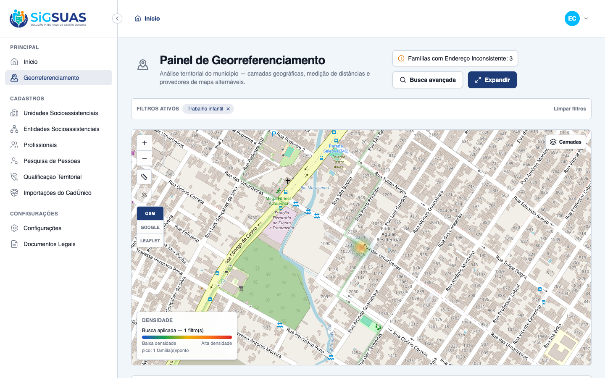
CA04 — Cruzamento cumulativo — interseção estrita (PO) ATENDIDO · navegador + automatizado
Critério (Gherkin): Dado que marco "Extrema Pobreza" e "Pessoas com Deficiência" juntos e aplico, Quando o mapa se atualiza, Então a intensidade máxima de calor destaca estritamente os perímetros onde residem famílias que atendem a ambos os critérios simultaneamente.
Como foi testado: Busca avançada → marcar Extrema pobreza + Pessoas com deficiência → Buscar → Aplicar no mapa. Conferência no banco: 2 famílias satisfazem AMBOS os critérios (interseção AND).
- Calor projetado SOMENTE nos 2 pontos da interseção (semântica AND estrita do backend — premissa P1 da spec, herdada da HU-GEO-01/RN18).
- Legenda atualizada para "Busca aplicada — 2 filtro(s)".
- Resumo analítico coerente: "Famílias nos filtros ativos: 2", distribuição por setor "Setor Fixture 001 - Oeste: 2" — mesmo conjunto do mapa.
- Cobertura automatizada da interseção AND (todas as combinações de critérios) na suíte Pest do apêndice.
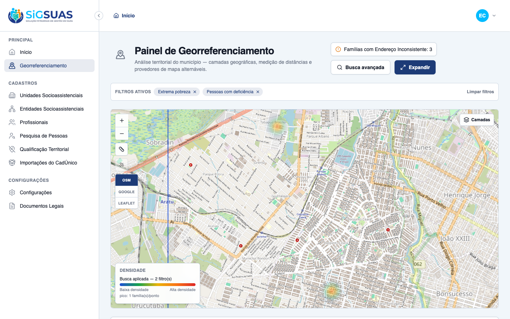
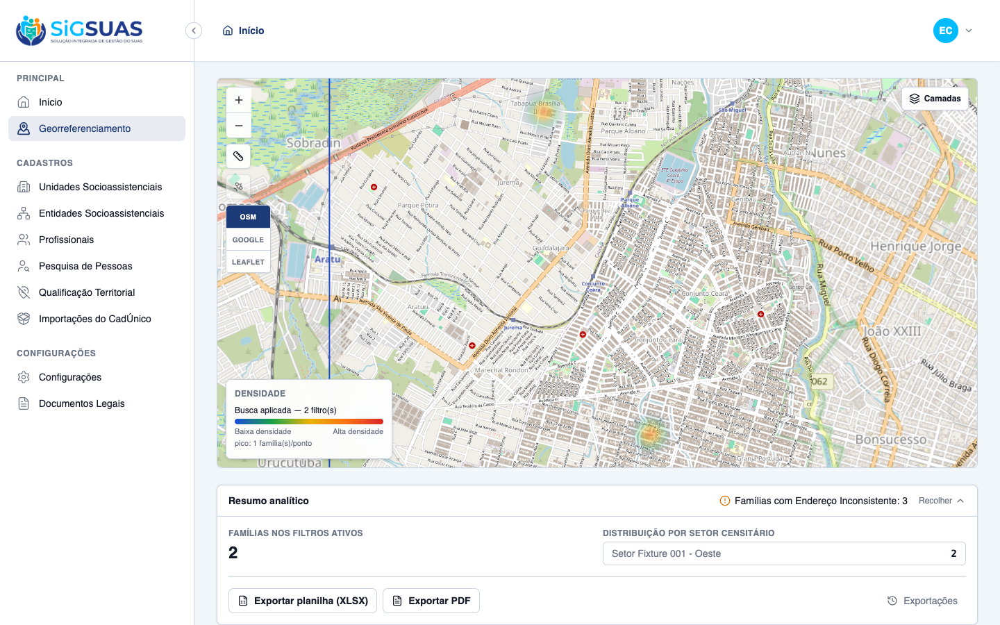
CA05 — Paleta fria dedicada para alertas de atualização (RN05) ATENDIDO · navegador
Critério (Gherkin): Dado que seleciono apenas "Cadastros Vencidos" (sem vulnerabilidades), Quando aplico a busca, Então a mancha de calor usa a paleta fria (azuis/roxo) e a legenda exibe o gradiente frio, distinto do quente.
Como foi testado: Busca avançada → desmarcar vulnerabilidades → selecionar Cadastros vencidos (mais de 24 meses) → Buscar → Aplicar no mapa.
- 5 famílias com cadastro vencido projetadas como manchas FRIAS (azul→azul-escuro→roxo), visivelmente distintas das cores quentes da RN04.
- Gradiente da legenda confirmado no DOM: linear-gradient #93c5fd → #3b82f6 → #1e40af → #6d28d9 (constante única de heat-palettes.ts).
- Paleta fria só é ativada quando os critérios efetivos são exclusivamente de atualização cadastral (premissa P2).
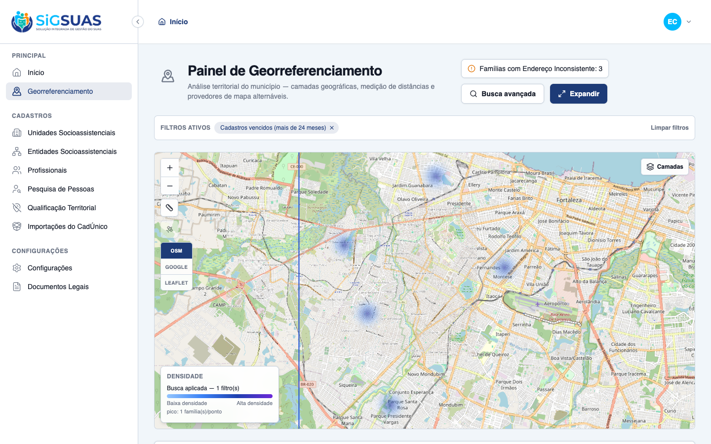
CA06 — Estado inicial neutro com setores zerados (RN02/RN07) ATENDIDO · navegador
Critério (Gherkin): Dado que abro o painel sem aplicar nenhum filtro, Então o mapa mostra apenas as delimitações do município, sem manchas de calor; o alerta instrutivo está visível e a legenda está oculta; a faixa de resumo lista os setores censitários com contagem zero; e o indicador "Famílias com Endereço Inconsistente" mostra o total real do município.
Como foi testado: Abrir /app/georreferenciamento sem interação prévia (o cache de setores agora carrega no mount — correção da revisão) → expandir o Resumo analítico.
- Mapa limpo com apenas o limite municipal de Fortaleza; nenhuma mancha de calor.
- Alerta instrutivo visível: "Selecione ao menos uma vulnerabilidade ou alerta para projetar dados no mapa".
- Legenda de densidade AUSENTE (verificado no DOM: geo-heat-legend inexistente).
- Resumo analítico lista os 3 setores censitários do município com contagem 0 (Setor Fixture 001/002/003).
- Indicador fixo "Famílias com Endereço Inconsistente: 3" — total real do município, visível mesmo sem filtros.
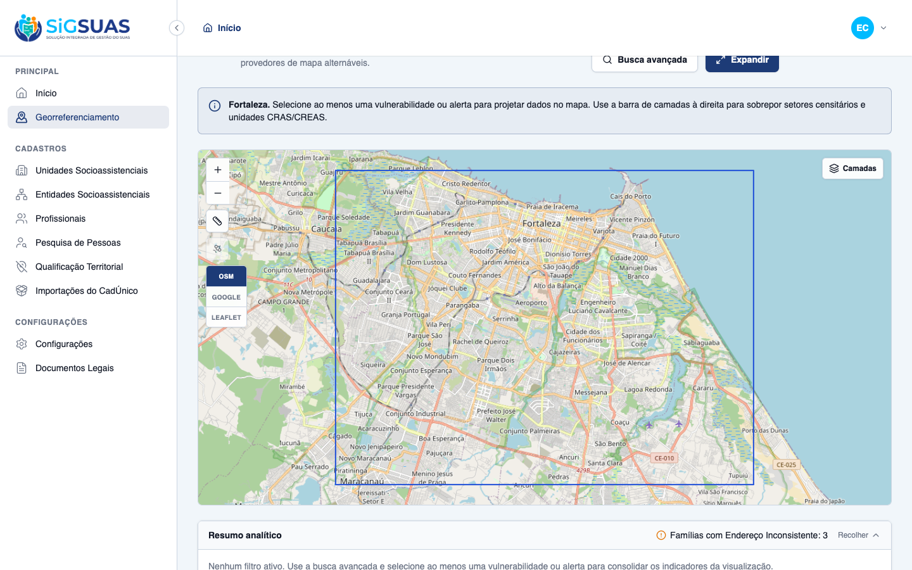
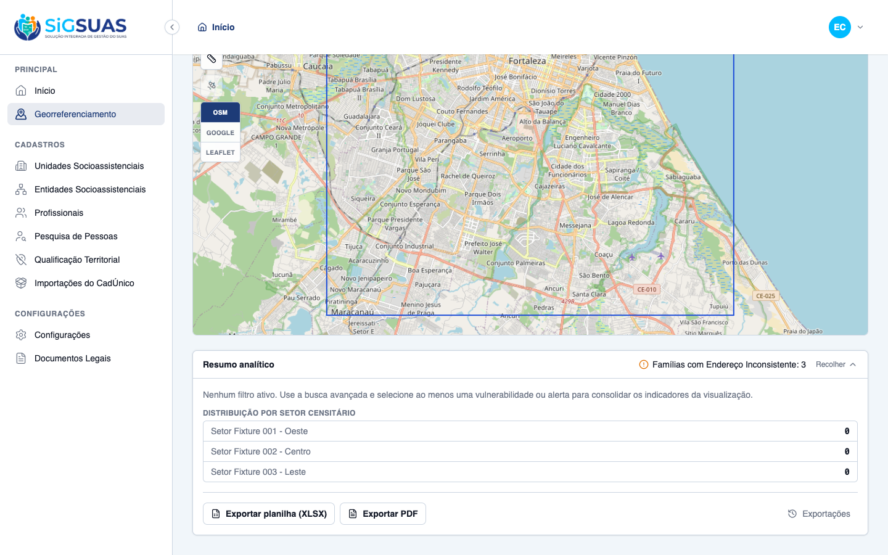
CA07 — Camada custom heatmap honra a paleta configurada (fecha débito HU-CAM) ATENDIDO · navegador
Critério (Gherkin): Dado que ligo uma camada publicada do Construtor com representação "heatmap" e cor configurada, Quando a camada renderiza, Então o gradiente do calor deriva da cor/paleta da camada (não o default do OpenLayers) e a legenda ganha uma entrada com o nome da camada e seu gradiente.
Como foi testado: Sidebar Camadas → ligar "Famílias beneficiárias do PBF" (camada do Construtor, style.color = #163c84).
- Manchas renderizadas em gradiente clara→#163c84 (interpolação a partir da cor configurada no Construtor), não mais o gradiente default do OpenLayers.
- Gradiente confirmado no DOM: linear-gradient rgb(220,226,237) → rgb(162,177,206) → rgb(104,128,175) → rgb(22,60,132) — último degrau = #163c84 exato.
- Legenda ganha entrada nomeada "Famílias beneficiárias do PBF" com o gradiente da camada (legenda multi-fonte, premissa P6).
- Débito de gradiente do dossiê HU-CAM formalmente fechado em e2e/reports/hu-cam-acceptance/debito-gradiente-fechamento.md.
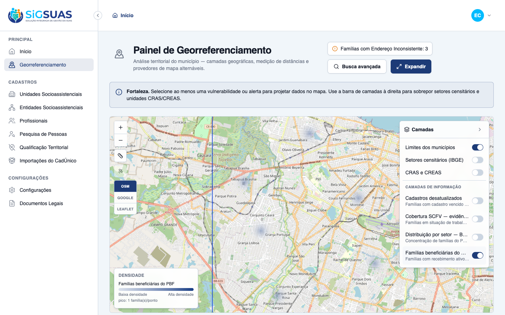
CA08 — Isolamento por setor censitário mantém o calor (RN08) ATENDIDO · navegador
Critério (Gherkin): Dado que aplico "Extrema Pobreza" combinada com um setor censitário específico, Quando a busca é aplicada, Então o mapa executa fly-to no perímetro do setor, o calor aparece apenas dentro do conjunto filtrado pelo setor e a faixa de resumo isola as estatísticas daquele setor.
Como foi testado: Busca avançada → Extrema pobreza + Setor censitário 230440005000001 — Setor Fixture 001 - Oeste → Buscar → Aplicar no mapa.
- Fly-to automático para o bounding box do resultado do setor selecionado.
- Calor restrito às famílias do recorte (4 famílias em extrema pobreza no setor Oeste).
- Resumo analítico isolado: distribuição exibe APENAS "Setor Fixture 001 - Oeste: 4", ocultando os demais setores.
- Chips ativos: "Extrema pobreza" + "Setor Fixture 001 - Oeste".
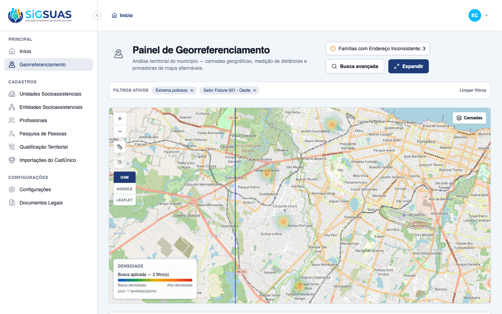
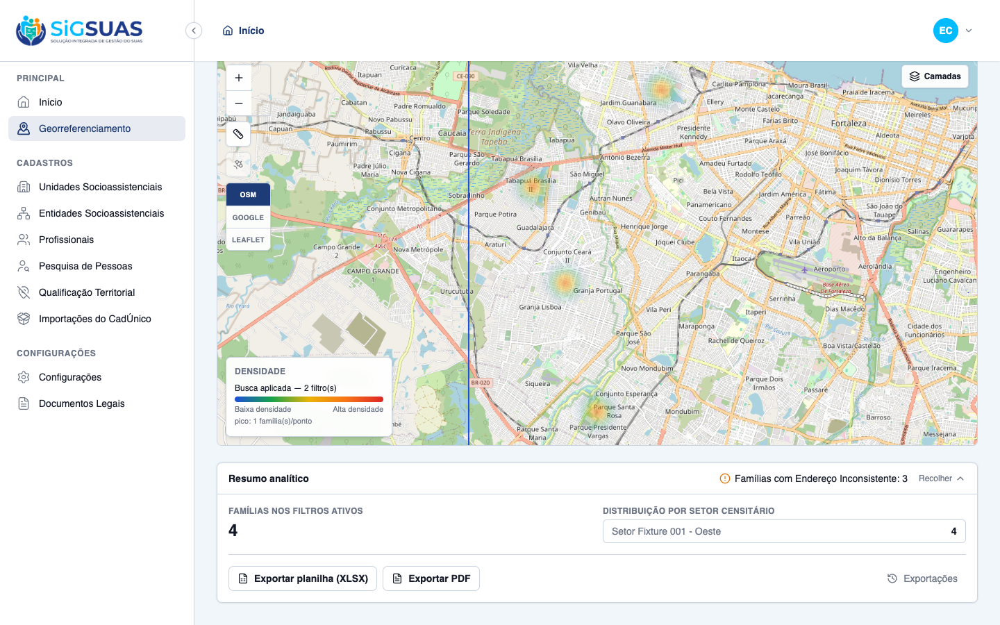
RN01 — Regressão — Isolamento multi-tenant terrestre ATENDIDO · navegador + automatizado
Critério (Gherkin): Dado que o mesmo usuário acessa outra organização (tenant) sem município homologado, Quando abre o painel, Então nenhum dado, coordenada ou distribuição de Fortaleza é exibido — cada município enxerga apenas o próprio território.
Como foi testado: Logout → login master → selecionar a organização Saraiva e Ramires (tenant 2, sem município configurado) → abrir o painel.
- Painel exibe "Município indisponível para o painel" e nada é projetado — zero vazamento de dados do tenant 1 (Fortaleza).
- Cobertura automatizada de isolamento (queries tenant-scoped, EnsureTenantScope) na suíte Pest do apêndice.

RN03 — Regressão — Controles de movimentação cartográfica (zoom/pan) ATENDIDO · navegador
Critério (Gherkin): Dado que estou no painel, Quando uso os botões de aproximação e distanciamento, Então o mapa aplica zoom in/out; o arrasto (pan) é nativo do engine.
Como foi testado: Toolbar do mapa → Aproximar (2×) → Afastar. Pan por arrasto é gesto nativo do OpenLayers/Leaflet.
- Zoom in e zoom out funcionais pela toolbar, com a busca aplicada preservada (calor e legenda intactos).
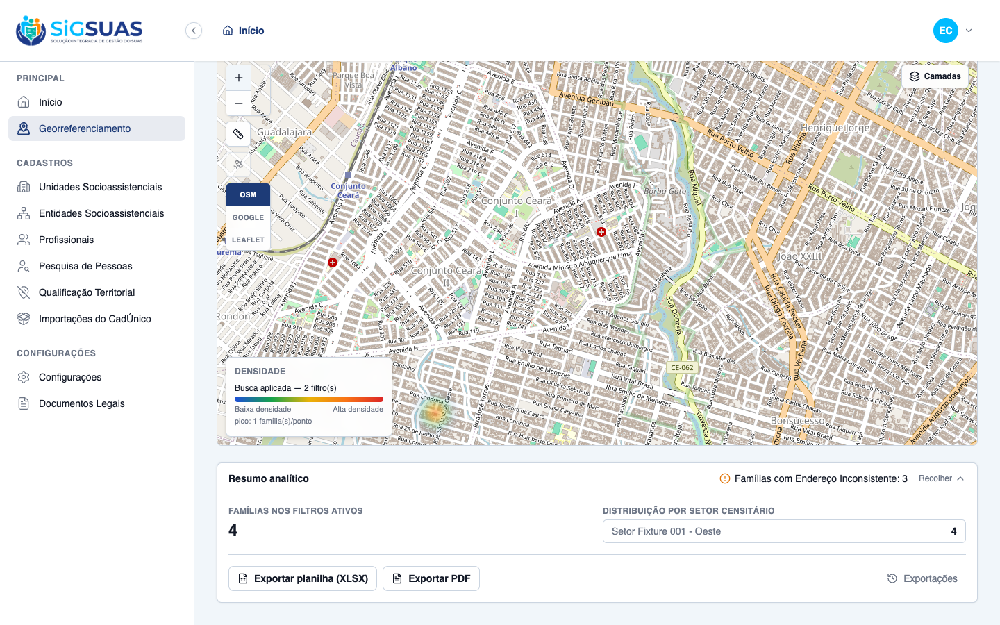
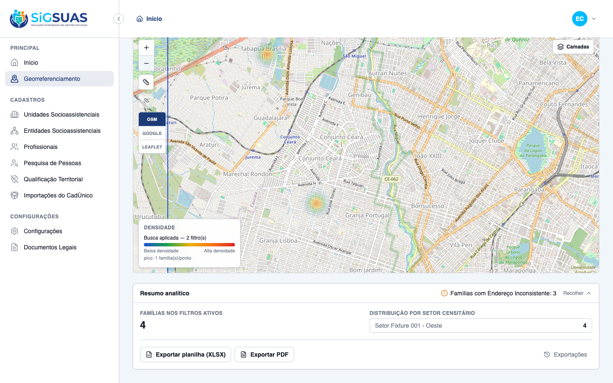
RN09 — Regressão — Marcadores CRAS/CREAS sobre o calor ATENDIDO · navegador
Critério (Gherkin): Dado que a busca está aplicada, Quando ligo a camada "CRAS e CREAS" na sidebar, Então os marcadores fixos das unidades aparecem sobre o mapa como referência frente às manchas de calor.
Como foi testado: Sidebar Camadas → ligar CRAS e CREAS com a busca de calor ativa.
- Marcador (pin) da unidade socioassistencial sobreposto ao mapa junto das manchas de calor e da legenda — referência de alcance dos serviços atuais.
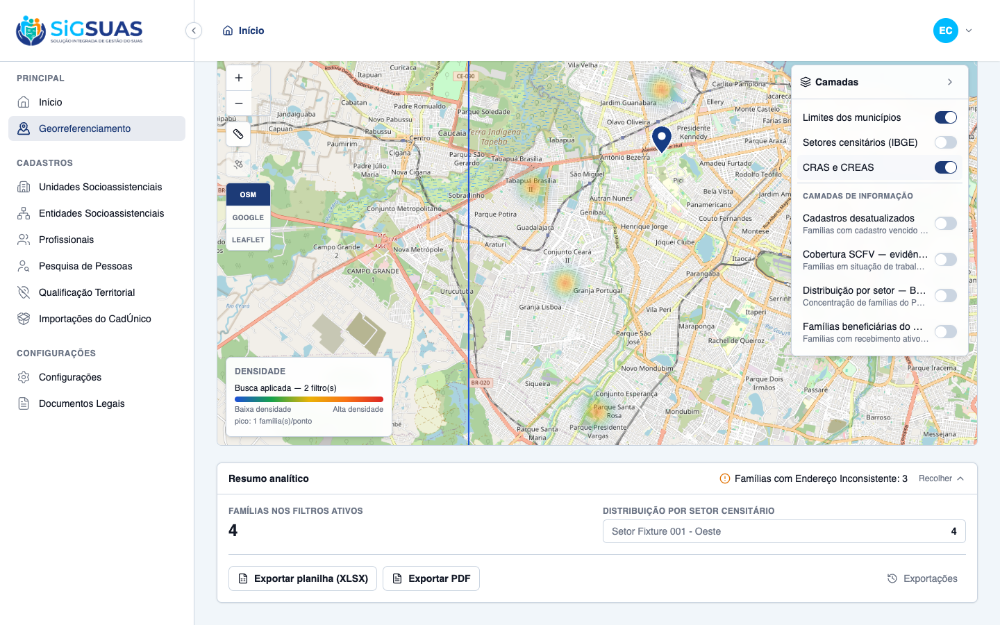
RN10 — Regressão — Governança pelo perfil do Profissional ATENDIDO · navegador
Critério (Gherkin): Dado um operador sem o papel geo_panel_viewer, Quando acessa o sistema, Então o menu Georreferenciamento não aparece e o acesso direto à rota é bloqueado (403).
Como foi testado: Login como operador (CPF 111***, sem papel add-on) → conferir sidebar → goto /app/georreferenciamento.
- Menu "Georreferenciamento" ausente na sidebar do operador.
- Acesso direto à rota redireciona para a página 403 (acesso negado).


REG-LEAFLET — Regressão — Paridade mínima no engine Leaflet ATENDIDO · navegador
Critério (Gherkin): Dado que a busca está aplicada, Quando troco o provedor para Leaflet, Então o calor degrada para círculos difusos com a cor do último degrau da paleta ativa e a legenda permanece idêntica e visível.
Como foi testado: Toolbar → provedor Leaflet com a busca quente (2 filtros) aplicada. Nota: durante a captura foi detectado e corrigido um defeito de empilhamento (legenda sob os panes do Leaflet) — commits f193594 (wrapper z-[1050]) e bfafbf7 (isolate no container do mapa, contendo o z localmente). Verificação adicional: abrir a Busca avançada com a legenda visível no Leaflet fora do fullscreen.
- Engine Leaflet ativo (build-then-swap sem quebra), círculos difusos na cor do último degrau da paleta quente e opacidade proporcional ao peso.
- Legenda dinâmica visível e idêntica sobre o mapa Leaflet (wrapper z-[1050] contido por stacking context local via isolate).
- Modal de busca/exportação segue corretamente ACIMA da legenda fora do fullscreen (hit-test no ponto da legenda retorna o backdrop z-[80] do modal).
- Débitos registrados (aceitos): paridade plena de heatmap no Leaflet permanece aproximação; export PDF indisponível neste engine (herdado da HU-GEO-01); toolbar/sidebar com z-20 sob panes do Leaflet documentado em plan.done.md para ticket.
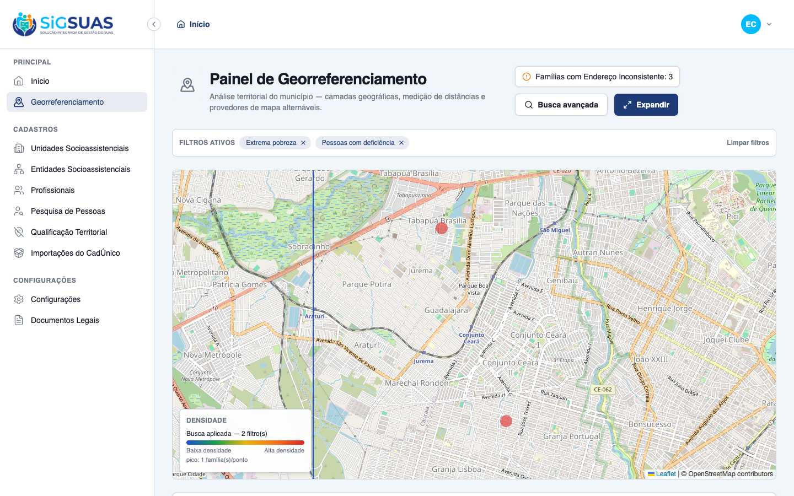
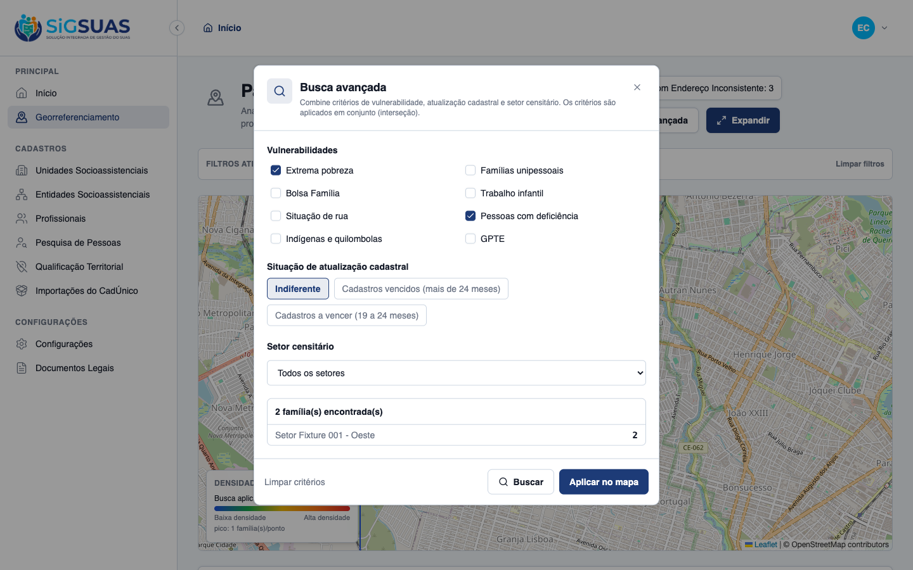
Anexo — Cobertura automatizada (Pest, --filter=GeoPanel — 51 testes / 186 asserções; suíte completa 2722 passed, única falha pré-existente catalogada MinioConnectivityTest)
PASS Tests\Unit\Services\Geo\GeoPanelQueryServiceTest ✓ it filters extreme_poverty by per_capita_income against the configu… 0.38s ✓ it filters single_person as exactly one ACTIVE member 0.03s ✓ it filters receives_pbf on the family flag 0.02s ✓ it filters member flags (child_labor, homeless_situation, has_disab… 0.06s ✓ it filters indigenous_quilombola as an OR between the two family fl… 0.02s ✓ it filters gpte by any traditional group, refinable by traditional_… 0.02s ✓ it intersects multiple criteria with AND (RN06) 0.03s ✓ it classifies expired as more than 24 months since source_updated_a… 0.02s ✓ it classifies expiring as between 19 and 24 months since source_upd… 0.03s ✓ it restricts by sector_uuid (SQLite fallback: sector city = family… 0.02s ✓ it aggregates by sector, groups anonymous points and computes the b… 0.02s ✓ it ignores families without an active locatable address point 0.02s ✓ it scopes every aggregate to the given tenant (RN01) 0.02s ✓ it validates that a sector belongs to the tenant municipality (RN08… 0.01s PASS Tests\Feature\Api\Client\GeoPanelExportTest ✓ it creates a pending export with the immutable filters snapshot and… 0.06s ✓ it blocks the export with 422 and the guidance message when no effe… 0.02s ✓ it requires the map image for pdf exports and stores it under the t… 0.03s ✓ it rejects a map image that is not a base64 png 0.02s ✓ it lists and shows only the exports of the active tenant, 404 on cr… 0.04s ✓ it downloads a completed export and refuses one still pending 0.04s ✓ it generates the xlsx from the filters snapshot with the tenant pre… 0.04s ✓ it generates the pdf composing the map image sent by the client (CA… 0.14s ✓ it marks the export as failed with the error message when the job f… 0.02s ✓ it neutralizes formula injection on every text cell of the spreadsh… 0.01s PASS Tests\Feature\Api\Client\GeoPanelLayerDataTest ✓ it merges a globally published layer after the builtins, keeping th… 0.02s ✓ it shows a selected-audience layer only to the covered tenant (CA43… 0.02s ✓ it never lists draft or inactive layers on the tenant panel (CA48/R… 0.03s ✓ it reflects audience/status changes on the very next fetch — no cac… 0.02s ✓ it executes the layer criteria strictly under each consumer tenant… 0.03s ✓ it answers 404 (never 403) for a layer that is not visible to the t… 0.03s ✓ it serves the CURRENT definition of the layer — an admin edit refle… 0.03s ✓ it shapes the payload by representation: markers, boundaries and he… 0.03s ✓ it denies the layer data endpoint to an operator without the geo_pa… 0.03s PASS Tests\Feature\Api\Client\GeoPanelTest ✓ it returns the tenant municipality with geometry, centroid and the… 0.04s ✓ it responds 409 geo_panel.city_unavailable when the tenant has no r… 0.02s ✓ it responds 409 when the municipality geometry exists but is inacti… 0.02s ✓ it lists exactly the 3 builtin layers with the stable contract (CA2… 0.02s ✓ it serves the census sectors of the tenant municipality as a GeoJSO… 0.02s ✓ it serves the tenant social units as anonymous points with type_cod… 0.03s ✓ it applies the AND intersection of combined criteria scoped to the… 0.03s ✓ it never leaks families from another tenant in the search (RN01/CA3… 0.03s ✓ it returns an empty payload when no record matches, so the map stay… 0.03s ✓ it rejects a search without any effective criterion (Seção 10 — reg… 0.02s ✓ it rejects a sector_uuid that belongs to another municipality (RN08… 0.02s ✓ it always includes the fixed RN07 indicator in the summary, even wi… 0.03s ✓ it aggregates the summary by census sector under the active filters… 0.03s ✓ it denies every geo-panel endpoint to the base operator without the… 0.02s ✓ it grants the full panel to the operator once the geo_panel_viewer… 0.03s ✓ it grants the full panel to the Master without any add-on role (RN2… 0.02s ✓ it does not let the geo_panel_viewer role in Tenant A open the pane… 0.03s ✓ it exposes geo_panel_viewer as an add-on role, never a hierarchy po… 0.02s Tests: 51 passed (186 assertions) Duration: 2.12s